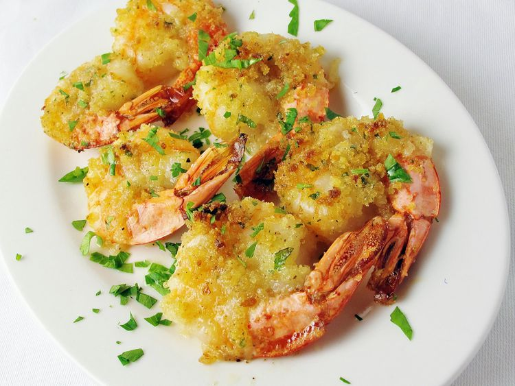

Home
Shrimp Scampi

Description
I've probably been making this recipe since I got it from my Mom in about 1985. I have no idea where she got the recipe from. I've been changing it over the years, and now I call it my own. When we started dating back in 1997, my husband would every now and then order shrimp scampi at a restaurant and always regret it afterwards, saying none of them competed with mine. You can vary the amounts of some of the ingredients, like the cayenne and garlic, to suit your taste. That's what I've done here because we like spicy and garlicky. Yum! Serve over angel hair pasta or any pasta of your choosing.
Ingredients
- 1 pound large shrimp, peeled and deveined
- 1/2 cup butter, melted
- 1/4 cup lemon juice
- 1/4 cup dry white wine
- 1 tablespoon minced garlic
- 1 teaspoon salt
- 1 teaspoon ground black pepper
- 1/2 teaspoon dried oregano
- 1/2 teaspoon dried parsley
- 1/2 teaspoon crushed red pepper flakes
- 1/2 teaspoon cayenne pepper
- 1/2 cup Italian-style seasoned bread crumbs
- 1/2 cup grated Parmesan cheese
Steps to prepare:
- Preheat oven to 450 degrees F (230 degrees C).
- Arrange shrimp in a shallow baking dish.
- In a bowl, mix the butter, lemon juice, wine, garlic, salt, pepper, oregano, parsley, red pepper flakes, and cayenne pepper. Pour over the shrimp. Sprinkle with bread crumbs and Parmesan cheese.
- Bake 12 to 15 minutes in the preheated oven, until the shrimp are bright pink and the topping is golden brown.